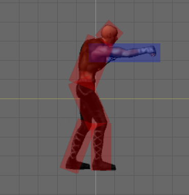

Colliders

The sprite collider system allows you to define any number of colliders for your sprite and optionally animate the colliders to match the animation of your sprite. You can set every property in the colliders just as you would with a normal collider component. You can choose to add a rigidbody to each collider, or designate one collider + rigidbody as Parent so all the other colliders will share its rigidbody.
Animated colliders can have their shape, relative position, rotation, and enabled state animated frame-by-frame. One example use case would be a damage trigger in an animated character. For example, a fighting game character could have a trigger collider that stays disabled in most animations but enables during an attack animation and animates size and relative position to match the sprite's attack animation.
Note: The sprite collider system may not fit everyone's needs since at present only BoxColliders are supported. If this is the case, you can always add colliders and rigidbodies manually on the sprite's game object. If you manually add a collider yourself, do not set any collider as Parent because you cannot have two Collider components on the main Sprite GameObject.
Static or Animated
Colliders can be defined as static or animated. Static colliders exist in the same relative position and shape throughout animation. Animated colliders can change shape and position with every frame of animation.
Parent or Child
A collider can be set as parent, meaning the collider will be spawned at the same component level as the owning Sprite component. This is useful for motive colliders or for colliders with a rigidbody that is shared among all child colliders. For colliders not set as parent, the collider is spawned as a child game object under the main Sprite game object level. Note: Parent colliders cannot be rotated.
3D or 2D
A 2D physics system was introduced in Unity 4.3. You have the option of using 2D or 3D colliders in Sprite Factory if you're using Unity 4.3+. Both collider types can be animated exactly the same way, and you can easily switch colliders to 2D or 3D without losing any animation. Note that 3D colliders do not interact with 2D colliders in any way. Also, there is an issue with 2D colliders you should be aware of if you're using a version of Unity below 4.5.
Creating Colliders
See Using the Editor - Sprite Properties and Using the Editor - Collider Editor.
Animating Colliders
Colliders can be animated in the Frame Editor. See Using the Editor - Collider Frame Properties.
Collider Groups
You can create named groups and assign colliders to them. Collider can groups help you more easily determine what to do when a collision event occurs. You can test for a group name in a collision event instead of having to test for individual collider names. For example, create a group called HitDetectors and assign all your hit detection colliders to this group. When a collision event occurs, just test for the group name and take action. Collider groups also allow you to filter the visible colliders in the frame editor by group so you can work on a particular set of colliders without other unrelated colliders getting in your way while you work. See Using the Editor - Collider Editor.
Collision Messages
Colliders spawned by Sprite will call SendMessage when colliding with other colliders and on mouse events. These messages are sent to the main Sprite level GameObject. You can add a custom script component to the Sprite to receive these collision messages to perform actions on collision events. See SpriteCollider for a list of all messages sent on collision.
How Colliders Work
When the Sprite is instantiated or when gameplay begins, it will spawn one Box Collider for every collider defined. If a collider is disabled during a particular frame of animation, the GameObject containing the BoxCollider component will be deactivated. (Note: If the BoxCollider is set to Parent, the BoxCollider component will be disabled/enabled during animation but the GameObject containing the component will remain active.)
Internal Collisions
Collisions between multiple colliders in a Sprite are always ignored by default for 3D colliders and for 2D colliders as of Unity 4.5. This makes it easy to have hit boxes and hurt boxes in a character without having to worry about the character hitting himself when he attacks.
*IMPORTANT NOTE: For Unity versions below 4.5, if you choose to use 2D colliders, internal collisions are not ignored within a Sprite. This is due to the fact that Unity's Physics2D class before 4.5 not contain a function to ignore collisions between colliders like the 3D Physics class does. This means that you must set up collision layers and assign a different layer to each type of collider to avoid interaction between them within a Sprite. (Note that there are separate 2D and 3D layer collision settings. The 2D settings are in Edit -> Project Settings -> Physics2D.)
Colliders for Character Movement (Motive Colliders)
For best results, if your character needs to interact with physics terrain such as platforms or hills, it is recommended you do not use Sprite Factory's animated box colliders for the main motive collider. Instead, use a CapsuleCollider or CharacterController if using 3D physics, or a BoxCollider2D plus a CircleCollider2D if you're using 2D physics for the character's main motive collider. Unless you're using a CharacterController, you will also need a Rigidbody or Rigidbody2D. These should be added to the Sprite's root game object by adding the components in the inspector. The character's main motive collider should be set up to ignore all collisions with hit detection colliders and attack colliders (the easiest way is to set up collision layers for this). The idea is for the motive collider to be used strictly for navigating terrain while the animated box colliders are used for all hit detection and attack delivery. If you attempt to use Sprite Factory's animated box colliders for your character's motive collider and you keep changing the shape as it walks over physics terrain, you will get very unpredictable results. This is because of how PhysX behaves when changing the shape of a collider -- essentially you are teleporting or popping to the collider into the new shape each frame. Physics was never meant to handle changing the shape of colliders, so physical interactions with animated colliders will not behave realistically.